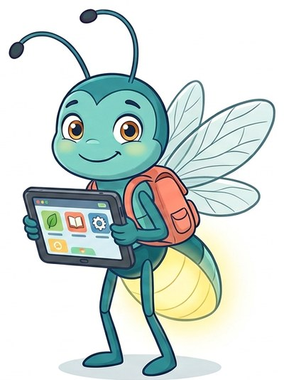

Lumi helps you read: word parts, long words, meanings, grammar, stories and texts to learn from. Each module has an Easy level with supports and a Challenge level without them.
The six modules cover the Illinois fourth grade English Language Arts standards: word analysis (Greek and Latin roots and affixes, multisyllable words), fluency and spelling, vocabulary and figurative language (similes, metaphors, idioms and proverbs), grammar and punctuation, and comprehension of stories, poems, plays and informational texts. Instructions can be heard in English or in Spanish; what is read is always in English and spoken by the English voice. In the comprehension games, the Spanish help (off at the start) translates only the question. The characters are Israel and his friends Daniel, Elías, Sophia, Athena, Salma and Selena.
| Module | Standard | What it covers |
|---|